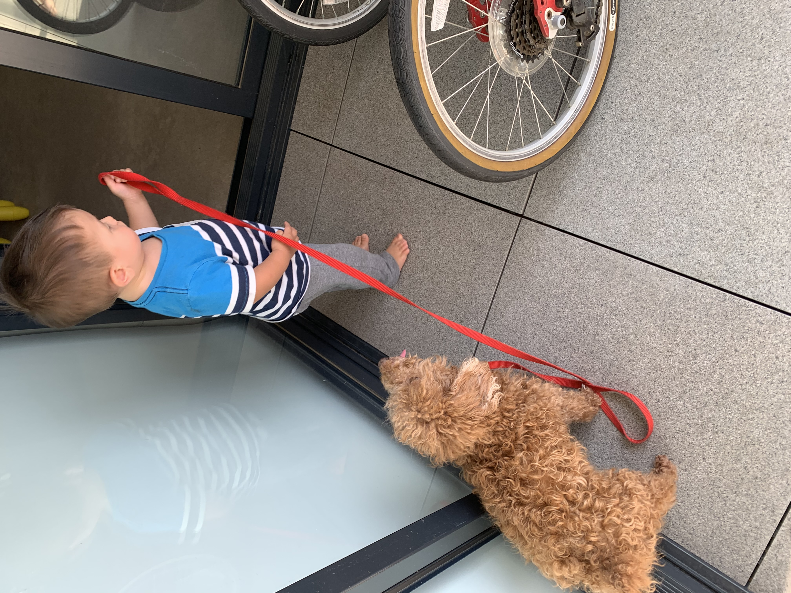
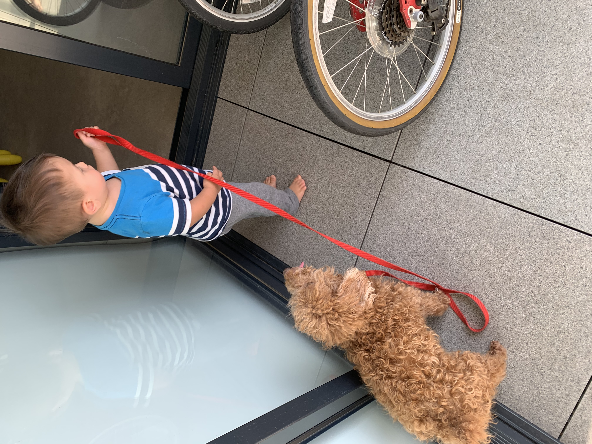
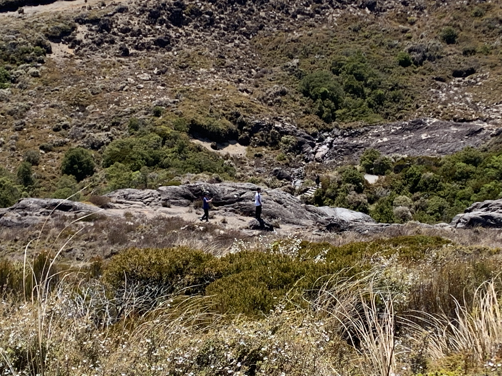
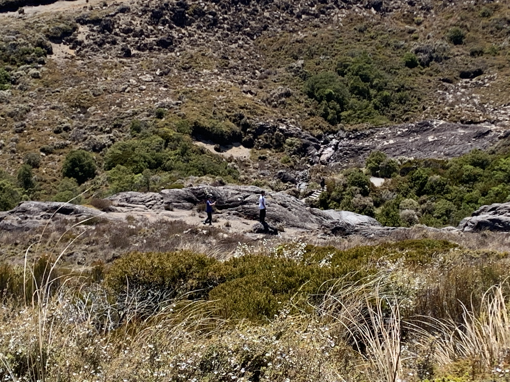

What kind of photography do I enjoy? I couldn't tell you the first thing about ISO's or DSLR's, but I do enjoy using the live photo feature on my phone! I love how live photos let you rewind a moment in time to watch it over and over again. Unfortunately, I haven't found a way to export these to non-iPhone devices without compressing them into unpleasent GIFs.
 



 
